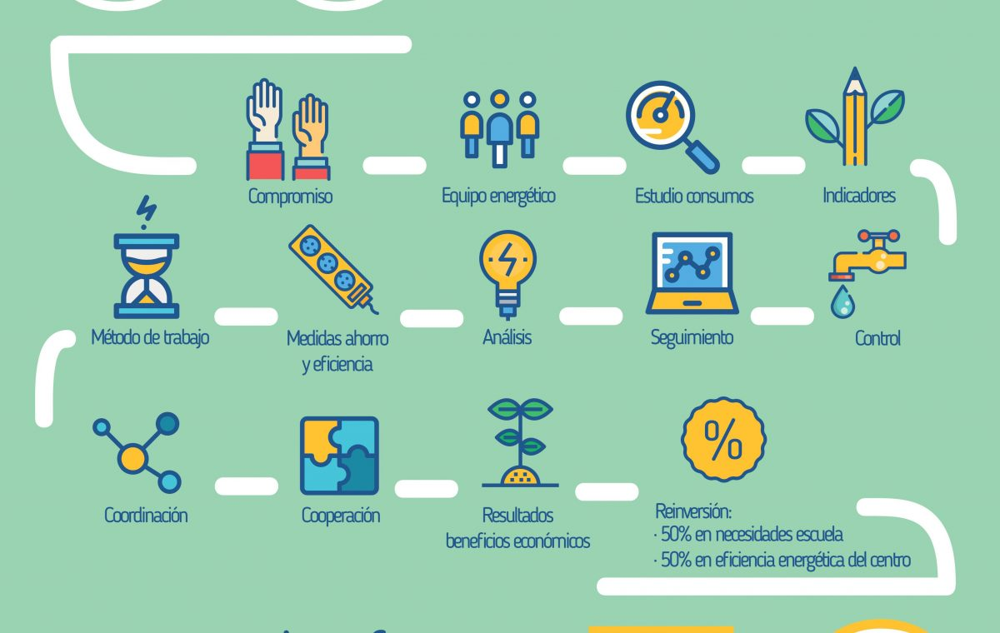

Monitorizacion ecooolocal

Colegios con sistemas de medida de energía
Este proyecto tiene como objetivo proporcionar una herramienta de ahorro energético a los alumnos de colegios que esten participando en proyectos de sensibilización energética.
* [Consumos del Colegio Einstein](http://91.121.222.125/emoncms/dashboard/view?id=25)
* [Consumos del Colegio Volta](http://91.121.222.125/emoncms/dashboard/view?id=26)
* [Consumos del Colegio Tesla](http://91.121.222.125/emoncms/dashboard/view?id=25)
## ecooolocal_colegios
Este proyecto tiene como objetivo proporcionar una herramienta de ahorro energético a los alumnos de colegios que esten participando en proyectos de energía.
## La monitorización de los colegios
Los datos energéticos de los colegios se presentan de la siguiente forma:
* Menú principal
* electricidad
* gas
* gasoil
* agua
* Menú secundario:
* Anual
* Mensual
* Semanal
* Diario
* Pantalla de visualización:
* 2 gráficas iguales para comparar consumos. Principalmente una semana con la otra
* Dos cuadrados con el consumo total que yo estoy visualizando
* La pantalla de abajo igual para comparar
* Que podamos llegar a una lectura cada 15 minutos
* El día la máxima división
* Elegir la semana de lunes a domingo
* mes el ultimo con el último día del mes
* Año: el que quieras
* Interesante añadir un sensor externo de temperatura exterior